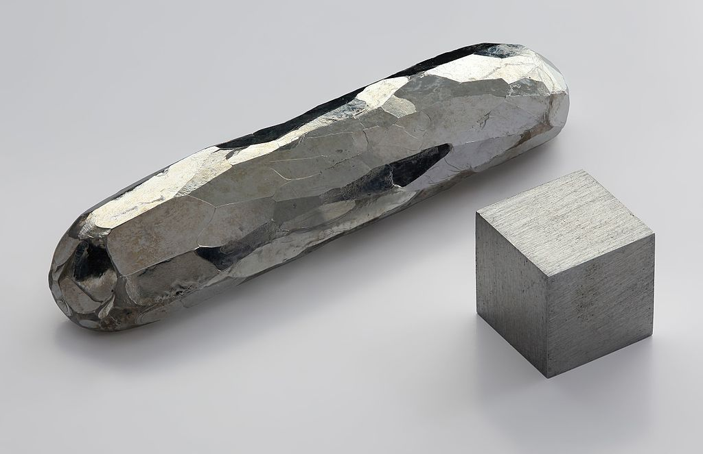
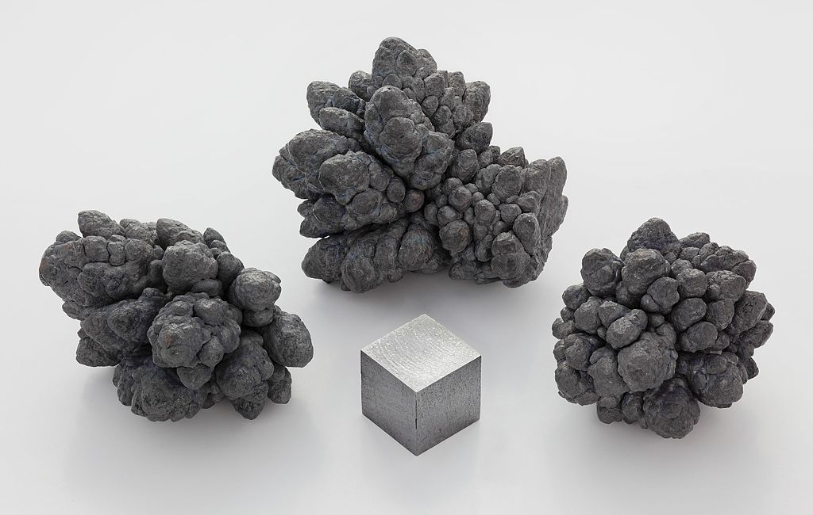
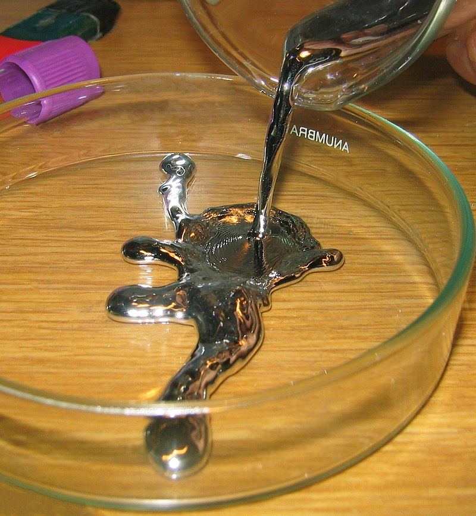

Multe substante chimice pot sa contribuie in mod semnificativ la imbunatatirea calitatii vietii noastre, cum ar fi de exemplu: calciul, magneziul, sodiul, potasiu etc (atunci cand sunt utilizate in mod corespunzator). Alte substante chimice sunt extrem de periculoase si pot afecta negativ sanatatea si mediul. Alte substante chimice sunt extrem de periculoase si pot afecta negativ sanatatea si mediul.
Substantele toxice sunt substante care au in compozitie un toxic care este daunator mediului inconjurator sau organismului viu cu care vine in contact.
1. Cadmiul este un metal toxic cu numarul 48 in tabelul periodic al elementelor. O boala provocata de cadmiu este boala Itai-Itai. Cadmiul poate produce iritații pulmonare grave daca sunt inhalați vapori; expunerea în timp îndelungat poate produce și afectarea rinichilor.

2. Plumbul este un metal toxic cu numarul 82 in tabelul periodic al elementelor. O boala provocata de plumb este Parkinson.

3. Mercurul este un metal toxic lichid cu numarul 80 in tabelul periodic al elementelor. Se afla in topul primelor 10 metale toxice, potrivit OMS.
